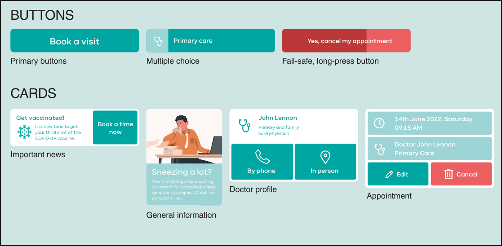

Client
Self-initiative, the Community of Madrid
Technologies
Adobe XD & Adobe Illustrator
Role
Mobile UI/UX Designer
Plattform
Mobile app (iOS/Android)
Year
Jan 2022 - Apr 2022 (4 months)
NOTE: This is my own initiative in which I redesign an existing mobile app, without any official relationship with the Community of Madrid.
Context
The Community of Madrid, in Spain, has a mobile application for making and managing healthcare appointments, called SaludMadrid. This application is a very simple application that lacks certain utilities and functionalities. I decided that it would be an interesting project to carry out because it is a very simple application, quite outdated and with great potential for improvement. In addition, it is far from the Electrolux application in terms of the type of application, and gives me the opportunity to create a new visual identity for it. In this project I wanted to focus more on the user interface and graphic design of the app, in contrast to previous projects which focused on other aspects of the user experience.
Process
The process followed in this project is based on the ViP (Vision in Product Design) methodology. ViP is a design approach that has three starting points:
- Design is about looking for possibilities, and possible futures, instead of solving present-day problems.
- Products are a means of accomplishing appropriate actions and interactions. In interaction with people, products obtain their meaning. ViP is interaction-centred.
- The appropriateness of an interaction is determined by the context for which it is designed. This context can be the world of today, tomorrow, or may lie years ahead.
Although the methodology was not applied in as much depth as I would have liked, I was able to deconstruct the main aspects of the app, analyze its interactions and create a context for it in the deconstruction phase, to be able to redesign it later on in a new context.
Mockups
The mockups were made once the basic concepts that I wanted to keep from the original application were abstracted and concentrated. These concepts included the ability to create, edit and delete appointments both by phone and in person, consult your personal and health data, etc. I added the possibility of changing doctors and placed a security barrier with a pin code for added security. All of this is reflected in the User Diagram below.
I used the wireframing technique to make the sketches of all the screens quickly and thus having the possibility to design the skeleton of the application comfortably.

Iteration
Once all the wireframes were designed according to the specifications, the design phase began, in the present or future methodology, or the second branch of it.
I started by choosing the colors I wanted for the application. For example, a green characteristic of the health-care worker suits to give it personality and to carry out the contextual part of the methodology. Green is also known to be a soothing color for the mind, and it is quite likely that if a user opens the application, it is because they will not feel very well.
I made a first iteration based on the first mockup of the application, using this green and with large rounded edges. Continuing with the context, I wanted the application to be approachable, smooth, user-friendly and easy to use. This vision would be further refined in the next iteration on which the rest of the screens would be based.

App icon
I designed the application icon with the objective of creating a visual identity for the application as part of a graphic design exercise that could complement the user interface design exercise.
From the elements extracted from the deconstruction phase and the logo of the original application I tried to connect them in the best possible way, so that it would be attractive and at the same time easily identifiable. These elements were the sanitary cross, the characteristic star of the flag of Madrid and the symbol of medicine with the two coiled snakes. The green color is used in the background in a way that unifies the application and the icon and creates a mental connection of the user when opening it.
Design elements
A series of design elements form a design language that remains stable throughout the application. The philosophy was to use large, clear and scalable buttons for accessibility reasons. Finally, the illustrations are part of Storyset’s fantastic free catalog.
Result
The result comprises the redesign of an already existing app, adding some additional functionalities but keeping the way it works. With this project, I wanted to focus in the UI part of the app, and demonstrate that I can create, maintain and adapt my own style in a real application.